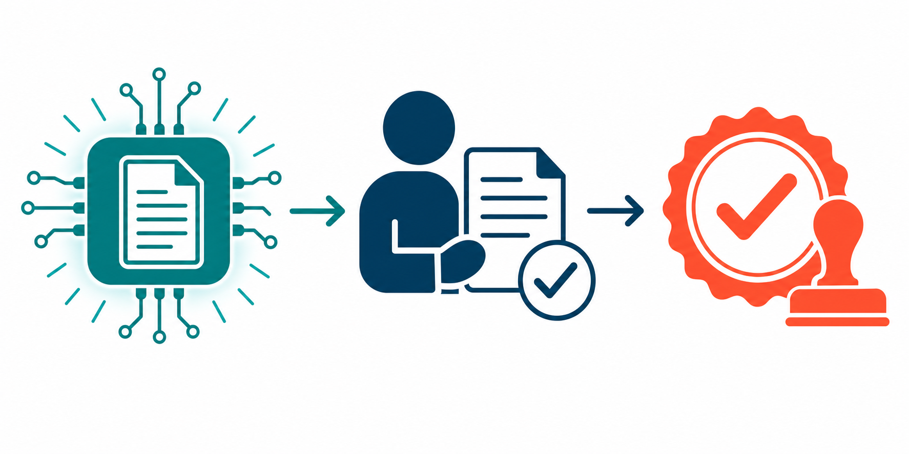

Key Takeaways
- On April 2, 2026, the FDA issued Warning Letter 320-26-58 to Purolea Cosmetics Lab — the first enforcement action to contain a dedicated section on "Inappropriate Use of Artificial Intelligence in Pharmaceutical Manufacturing."[1]
- The FDA did not ban AI. Its explicit statement: if AI is used as an aid in document creation, a qualified human must review those documents before they enter the quality management system — the same accountability standard that has governed pharmaceutical records for decades under 21 CFR 211.22(c).[2]
- Purolea used AI to generate drug product specifications, standard operating procedures, and master production records without any human review — then cited the AI's failure to mention process validation requirements as a defense, a response the FDA explicitly rejected.[1]
- The FDA's January 29, 2026 Clinical Decision Support Software guidance established a parallel framework for AI in clinical settings: CDS tools that present evidence and leave the clinical decision to a licensed professional occupy a different regulatory category than tools that make autonomous recommendations.[3]
- Current evidence across drug manufacturing, medical devices, and clinical AI shows a consistent principle: AI-assisted drafting and summarization are reliable when paired with qualified human review; AI operating as the final decision-maker — in quality documents, prescriptions, or clinical recommendations — creates measurable compliance and patient safety risk.[6][7]
Why This Enforcement Action Matters
Regulatory enforcement often lags technology by years. The FDA's April 2, 2026 warning letter to Purolea Cosmetics Lab — a small homeopathic drug manufacturer in Livonia, Michigan — closed that gap for artificial intelligence in manufacturing with a single, precisely worded sentence.[1]
The agency did not write a new rule. It applied an old one. Under 21 CFR 211.22(c), the quality control unit of any pharmaceutical manufacturer bears responsibility for approving or rejecting all procedures and specifications that affect product identity, strength, quality, and purity. The FDA's position in Warning Letter 320-26-58 is that this responsibility transfers to AI-generated documents without modification: a human must review them, a qualified person must clear them, and that review must be documented.
That principle extends well beyond a single small manufacturer in Michigan. Any organization using AI to generate regulatory documents, clinical decision support tools, patient-facing health content, or quality-critical records now has a primary-source FDA statement about what "compliant AI use" looks like in practice. This article breaks down what happened at Purolea, what FDA actually said, how the action fits into a broader regulatory pattern, and what it means for AI in telehealth and editorial health settings.
What Happened: The Purolea Warning Letter
Purolea Cosmetics Lab manufactured homeopathic drug products — including products labeled to treat shingles and genital herpes — at a facility inspected by FDA investigators for three days in late October 2025. The warning letter issued on April 2, 2026 documented failures across nearly every dimension of pharmaceutical manufacturing: insects and foreign material in production areas, no microbiological testing of finished products, no identity or purity testing of incoming components, and unapproved new drug claims on product labels. The company subsequently ceased drug production.[1]
Within that broader collapse of quality systems, one section of the letter drew particular attention from industry observers. Under the heading "Inappropriate Use of Artificial Intelligence in Pharmaceutical Manufacturing" — a heading that had never appeared in an FDA warning letter before — the agency documented that Purolea had used AI agents to generate the facility's drug product specifications, standard operating procedures, and master production and control records. These AI-generated documents were used in manufacturing operations without any human review for accuracy or CGMP compliance.[1]
The second AI-specific finding was equally telling. When FDA investigators cited Purolea for failing to conduct process validation before distributing drug products — a clear requirement under 21 CFR 211.100 — the company's stated defense was that the AI agent it used had never told it that process validation was legally required. FDA rejected this framing without ambiguity:
The letter went further, stating that if Purolea resumes pharmaceutical manufacturing and uses AI to support CGMP activities, "any output or recommendations from an AI agent must be reviewed and cleared by an authorized human representative of your firm's Quality Unit in accordance with section 501(a)(2)(B) of the FD&C Act."[1] This forward-looking language applies to any resumption of activity — making the principle prospective, not merely retrospective.
The Regulatory Precedent
Context matters here. The regulatory law attorney Kalie Richardson of Hyman, Phelps & McNamara told the Regulatory Affairs Professionals Society that the letter "highlights fundamental GMP shortcomings and should not indicate that the agency is against the use of AI."[8] That reading is correct: the FDA cited 21 CFR 211.22(c), a regulation that defines quality-unit responsibility, not a new AI-specific statute. The agency applied its existing accountability framework to a new tool.
That framing has a precise historical parallel. Beginning in the early 2000s, FDA enforcement began focusing heavily on data integrity — the principle that all records entering a quality management system must be attributable, legible, contemporaneous, original, and accurate. Over the following two decades, data integrity violations appeared in 60–80% of pharmaceutical warning letters issued to domestic and foreign manufacturing sites.[10] The underlying rule had not changed; enforcement had finally caught up with the way records were actually being generated and stored in the digital age.
The Purolea action follows the same structural pattern. AI-generated documents entering a QMS without human review are, in the FDA's view, the 2026 version of unverified data in a drawer — they look like compliance documentation, but there is no defensible chain of custody connecting the content to a qualified human who confirmed its accuracy. On the device side, the same principle applies under 21 CFR Part 820 — specifically sections 820.20 (management responsibility) and 820.70 (production and process controls), which were updated in February 2026 when the Quality Management System Regulation (QMSR) incorporated ISO 13485:2016 by reference.[5]
Peer-reviewed analysis of AI in GMP settings reaches the same conclusion from the scientific side. A 2025 review in Pharmaceuticals found that "AI/ML should augment rather than replace human expertise" and that "regulatory frameworks stress the role of subject matter experts in overseeing AI predictions, validating outputs, and intervening when anomalies are detected." ICH Q9(R1), the international guideline on quality risk management, "explicitly encourages the use of advanced tools for quality risk management" while requiring structured validation frameworks when those tools affect critical process parameters.[6]

What FDA Wants from AI Use in Healthcare
The Purolea letter establishes a clear minimum: AI output in quality-critical activities requires human review, qualified-person sign-off, and a traceable record connecting the document to the person who approved it. That is not a high bar — it describes the same documentation standard that has always applied to consultants, contractors, and third-party vendors generating pharmaceutical records. The novelty is that FDA has now said so explicitly for AI.
The FDA's broader AI regulatory posture, reflected in its January 2025 draft guidance on AI-enabled medical device software functions and the January 29, 2026 Clinical Decision Support Software final guidance, builds on that foundation.[3][4] The CDS guidance — originally issued January 6, 2026 and re-issued January 29, 2026 after Commissioner Marty Makary described it as intended to "cut unnecessary regulation and promote innovation" — establishes when AI clinical decision support tools fall outside device regulation: specifically, when they present evidence to a clinician and leave the clinical decision to that qualified professional.
The practical implication is a consistent two-part test across both pharmaceutical and device contexts. First: does an AI tool generate output that enters a quality system, clinical workflow, or patient-care pathway? Second: is there a documented qualified human who reviewed that output and took responsibility for its accuracy before it was acted upon? If the answer to the first question is yes and the answer to the second is no, FDA's current framework treats that as a compliance failure — regardless of how accurate the AI's output happened to be.
Research published in Communications Medicine identifies the underlying risk that makes this framework rational: AI hallucination in regulated healthcare contexts — "fabricating clinical insights or misinterpreting trends" — can produce documents that appear authoritative and complete while containing factual errors that affect product quality or patient safety.[7] Human review is not a formality; it is the mechanism by which those errors are caught before they reach patients or inspectors.
| AI Use Case | FDA Position | Required Safeguards |
|---|---|---|
| AI-generated SOPs and manufacturing records | Permitted as an aid in document creation; AI does not transfer regulatory accountability[1] | Human review for accuracy and CGMP compliance; Quality Unit documented approval; validation records under 21 CFR 211.22(c) |
| AI clinical decision support (CDS) | Non-device status available when CDS presents evidence and leaves clinical decision to the licensed professional[3] | Clinician must review and make final determination; tool must not autonomously direct treatment; audit trail of clinician override capability |
| AI in drug discovery and preclinical research | Supported under FDA's risk-based credibility framework; lower-risk applications require minimal validation when not affecting patient safety[4] | Context-specific model evaluation; documentation of AI tool selection and validation; change management plans for adaptive models |
| AI patient-facing chatbots and health information tools | No explicit guidance as of January 2026 CDS update; consumer-facing AI tools are a noted gap in the current guidance framework[3] | Current best practice: physician review of content, clear disclosure of AI involvement, escalation pathways to licensed clinicians; formal guidance expected |
What This Means in Telehealth and Editorial Settings
The Purolea enforcement action establishes a principle that applies directly to how AI tools are used in healthcare editorial and telehealth workflows. The FDA's position is not that AI creates risk — it is that AI without human accountability creates risk. That distinction matters for how AI should be deployed in practice.
Where AI Is Reliably Helpful
- Drafting health education content for physician review and editing
- Summarizing peer-reviewed literature for editorial synthesis
- Extracting structured data from clinical guidelines
- Identifying relevant citations across large document sets
- Generating first drafts of non-clinical documentation (billing codes, scheduling workflows)
Where Human Verification Is Essential
- Clinical recommendations, diagnoses, or treatment plans
- Regulatory compliance documents and quality records
- Patient-specific prescription instructions
- Drug interaction or dosing information presented to patients
- Any content that will be acted upon without physician review
The FDA's framework draws the line at accountability, not at the technology itself. AI drafting a document that a qualified physician then reads, edits, and signs is a workflow with a clear accountability structure — the same structure that applies when a medical writer, resident, or administrative staff member produces a first draft. AI generating a document that goes directly into use without that review step collapses the accountability structure entirely. The Purolea case illustrates what happens at the extreme end of that collapse.
For telehealth platforms and health information publishers, the practical takeaway is that AI tools are well-suited to tasks where human review follows as a designed step in the workflow — and poorly suited to tasks where the AI's output is the final output. Editorial health content, summarizations of guidelines, and structured data extraction all benefit from AI assistance. Clinical recommendations, regulatory attestations, and patient-specific instructions require physician review as a non-negotiable safeguard. The distinction is not about AI capability; it is about which tasks carry patient safety or regulatory accountability when they go wrong.
Bottom Line
Warning Letter 320-26-58 will not be the last FDA enforcement action to address AI. As more healthcare and pharmaceutical organizations reach for AI tools to manage documentation and compliance workloads, the agency has now made its minimum requirement clear in primary-source language: AI can assist, but a qualified human must review the output, take responsibility for its accuracy, and leave a documented record of that review. That standard does not restrict what AI can do — it defines who remains accountable when AI does it.
References
- U.S. Food and Drug Administration. Warning Letter 320-26-58 to Purolea Cosmetics Lab. April 2, 2026. Center for Drug Evaluation and Research (CDER). fda.gov/inspections-compliance-enforcement-and-criminal-investigations/warning-letters/purolea-cosmetics-lab-722591-04022026
- U.S. Code of Federal Regulations. 21 CFR 211.22 — Responsibilities of quality control unit. Cornell Law School Legal Information Institute. law.cornell.edu/cfr/text/21/211.22
- U.S. Food and Drug Administration. Clinical Decision Support Software — Final Guidance. Docket FDA-2017-D-6569. Issued January 6, 2026; re-issued January 29, 2026. fda.gov/regulatory-information/search-fda-guidance-documents/clinical-decision-support-software
- U.S. Food and Drug Administration. Artificial Intelligence-Enabled Device Software Functions: Lifecycle Management and Marketing Submission Recommendations (Draft Guidance). Docket FDA-2024-D-4488. January 2025. fda.gov/regulatory-information/search-fda-guidance-documents/artificial-intelligence-enabled-device-software-functions-lifecycle-management-and-marketing
- U.S. Food and Drug Administration. Quality Management System Regulation (QMSR) — 21 CFR Part 820, incorporating ISO 13485:2016. Effective February 2, 2026. fda.gov/medical-devices/postmarket-requirements-devices/quality-management-system-regulation-qmsr
- Arden NS, et al. Regulatory Perspectives for AI/ML Implementation in Pharmaceutical GMP Settings. Pharmaceuticals. 2025. PMC12195787. pmc.ncbi.nlm.nih.gov/articles/PMC12195787/
- Regulating the AI-Enabled Ecosystem for Human Therapeutics. Communications Medicine. 2025. PMC12085592. pmc.ncbi.nlm.nih.gov/articles/PMC12085592/
- Richardson K (Hyman, Phelps & McNamara). Quoted in: FDA warns firm for inappropriate use of AI in drug manufacturing. Regulatory Affairs Professionals Society (RAPS). April 17, 2026. raps.org/resource/fda-warns-firm-for-inappropriate-use-of-ai-in-drug-manufacturing.html
- Greenlight Guru. What the Purolea Warning Letter Really Means for AI in Manufacturing. April 28, 2026. greenlight.guru/blog/purolea-warning-letter-ai
- Food and Drug Law Institute (FDLI). FDA Data Integrity Enforcement Trends and Practical Mitigation Measures. April 2018. fdli.org/2018/04/update-fda-data-integrity-enforcement-trends-practical-mitigation-measures/